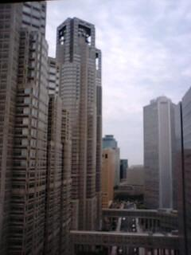
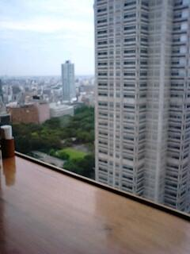
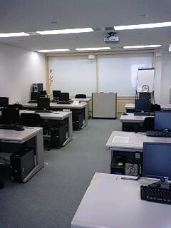

うるがいの話 ある日
最新: 震度５強うるがいとは 前提知識です
カニの画像をクリックすると『うるがいの話』サイトを表示します|
|
【うるがいの話】 うるがい(ｳﾙｶﾞｲ urugai)とは、『もずくがに』の名前でとても大きくなります。 |
|---|---|
|
|
【Got cat カミマヤーの話】 たながー（ﾀﾅｶﾞｰtanagaa）とは手長えびのことで、何種類かあり大きいのは車 エビぐらいになります。 |

|
【ぶながぁの話】 ぶながー(bunagaa)とは、赤い髪の毛、赤い身体、そして身長は１ｍ２０ｃｍ ぐらい、川の蟹を食べているの目撃された。場所は沖縄県国頭郡大宜味村のと ある村僕の隣近所に住んでいる爺さんから、聞いた話です。 |
|
|
【ギーマの話】 ギーマ(giima)とは、山原の里山に咲くスズランに似た、 花を付けます。実は食べられます、 気が付くと口の周りが紫になっています。 |
2021年10月08日 (金）震度５強
15:44
  
昨夜、本を読み終え１０時過ぎに消灯する。ところが、なぜか１１時半に目が
覚めてしまう。眠れそうにないので灯りをつけ、パソコンを起動する。震度５
強の地震のニュースを見る。水道管が破裂しているらしい、この前和歌山県で
もあったなと、と思いながらも新しい本を読む、なかなか眠くならない、とう
とう一冊を読み終え、２冊目に入る。近頃は眠りジィジィーで寝つきが良いの
だが、結局３時過ぎに消灯。起きたのは５時過ぎ、ふむふむ何かがおかしい。
東京２３区内で震度５強を観測したのは、東日本大震災以来とのこと。テレビ
の昼のワイドショーでは、地震の揺れの映像が映し出されていた。震災後の３
週間後に東京で研修に行ったときに、研修室にいた受講生達が新宿高層ビルの
エレベーターに乗っている女性の中に、隣接する高層ビルの揺れを目の当たり
にして泣き出していたと彼らが話すのを聞いた。その１年半年前に新宿高層ビ
ルの高い位置にある階で２週間も研修を受けていた。